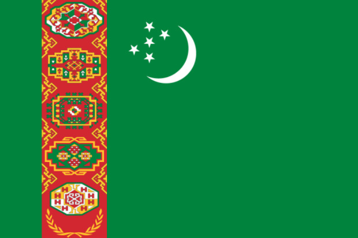
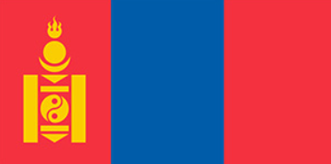
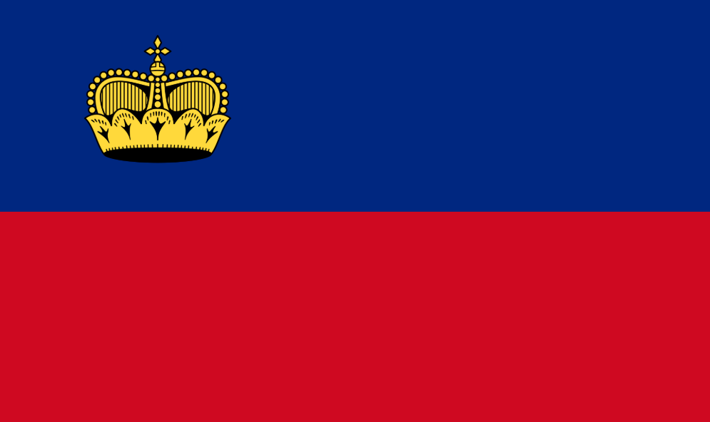
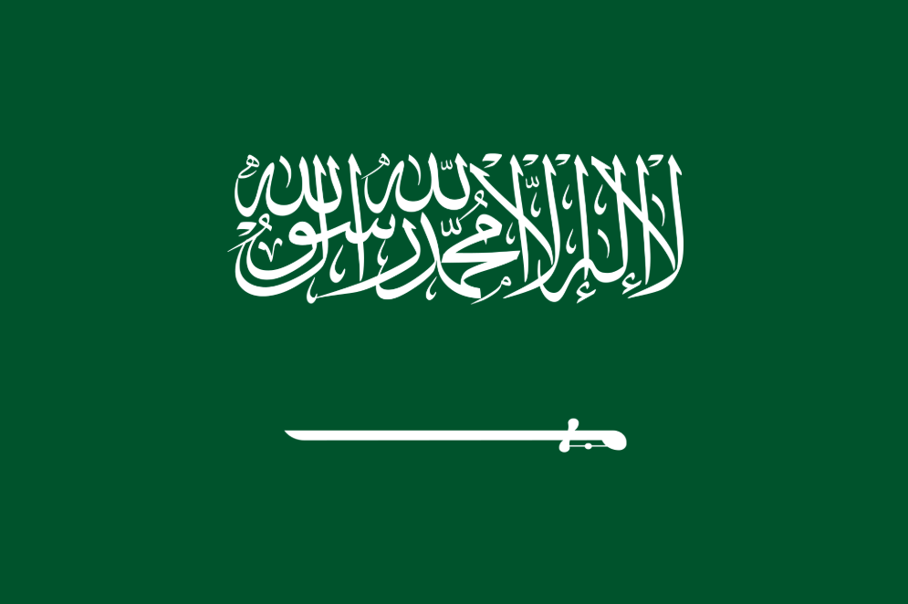

Skyddsrum, Schweiz
Schweiz är ett av de mest förberedda länderna i världen om en katastrof eller ett krig skulle bryta ut. Under kalla kriget byggdes enorma mängder skyddsrum, och lagen gjorde länge att alla invånare skulle ha tillgång till en skyddsplats. Det finns till och med hemliga bunkrar gömda bakom vanliga husfasader och bergsväggar. Vissa berg i Schweiz har militära baser och flygplanshangarer inuti själva berget. Många broar och tunnlar byggdes dessutom så att de snabbt skulle kunna sprängas för att stoppa en invasion.
Porten till helvetet, Turkmenistan

Mitt i öknen finns en krater som kallas "Darvaza". Den har brunnit oavbrutet sedan 1971. Det var sovjetiska ingenjörer som råkade borra i en gashåla så att marken kollapsade. De tände på gasen och trodde den skulle brinna ut på några dagar - den har brunnit i över 50 år nu. Det ser ut som en scen ur en science-fiction-film mitt i natten.
Hästarnas herravälde, Mongoliet

Mongoliet är det mest glesbefolkade landet i världen, men det är inte tomt. Det finns ungefär 13 hästar per person i landet. Det är det enda landet i världen där hästpopulationen är så mycket större än den mänskliga befolkningen. Dessutom lever en stor del av befolkningen fortfarande som nomader i tält (ger), även om de har parabolantennar och solpaneler utanför.
Du kan hyra hela landet, Liechtenstein

För cirka 70 000 dollar per natt kan man faktiskt hyra hela landet Liechtenstein. Om du betalar får du en symbolisk nyckel till landet, du kan få egna gatuskyltar uppsatta och du får bjuda upp till 150 gäster. Du får dock inte ändra några lagar, men du får "provsmaka" att vara monark för en natt.
Landet som importerar sand och kameler, Saudiarabien

Trots att Saudiarabien nästan helt består av öken, importerar de enorma mängder sand från Australien. Varför? Ökensand är formad av vind och är för rund och slät för att användas i byggprojekt (betong behöver kantig sand för att fästa). De importerar även kameler från Australien, eftersom de australienska kamelerna (som en gång importerades dit) ofta är större och friskare än de lokala.